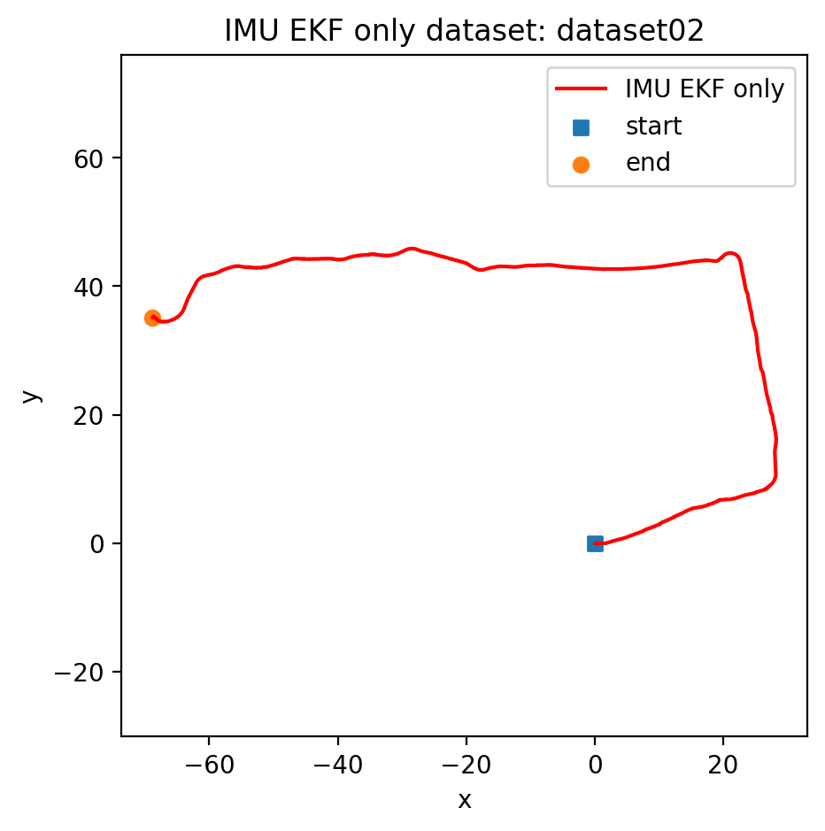
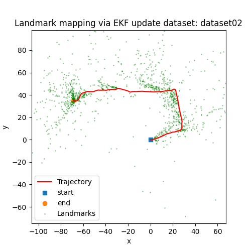

ECE 276A · STATE ESTIMATION
Visual-Inertial SLAM with a Joint EKF
Estimate a moving sensor trajectory and a 3D landmark map from IMU motion and stereo observations.

The project
This project combines IMU prediction, stereo landmark initialization, and joint visual updates in an Extended Kalman Filter on SE(3). The published figures show estimated geometry and trajectories.
How it works
- Predict pose and uncertainty by integrating linear and angular IMU measurements.
- Triangulate stereo features, then update the joint state with reprojection measurements.
- Visualize the estimated trajectory and landmark map; use the IMU-only result as a qualitative comparison.
See the evidence

